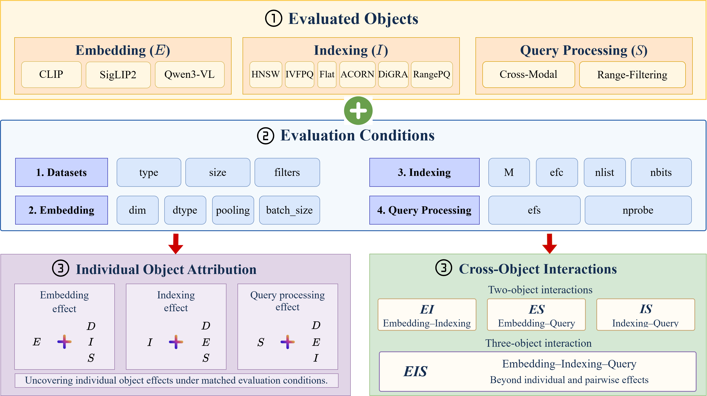
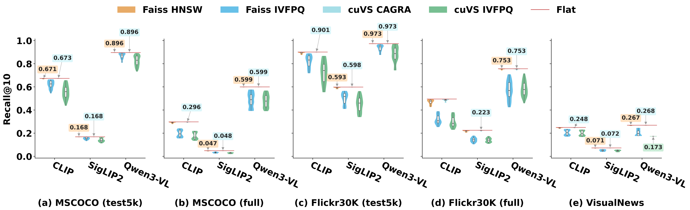
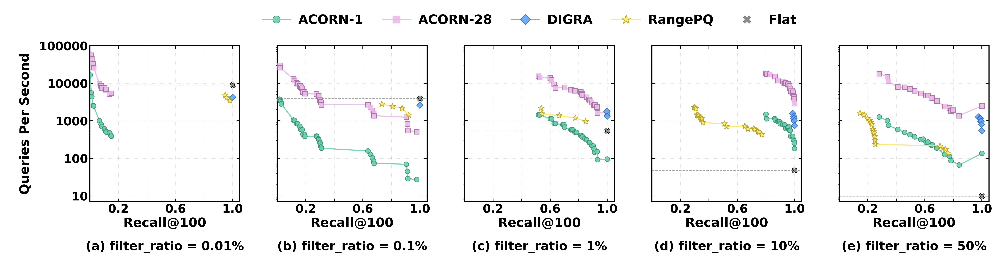
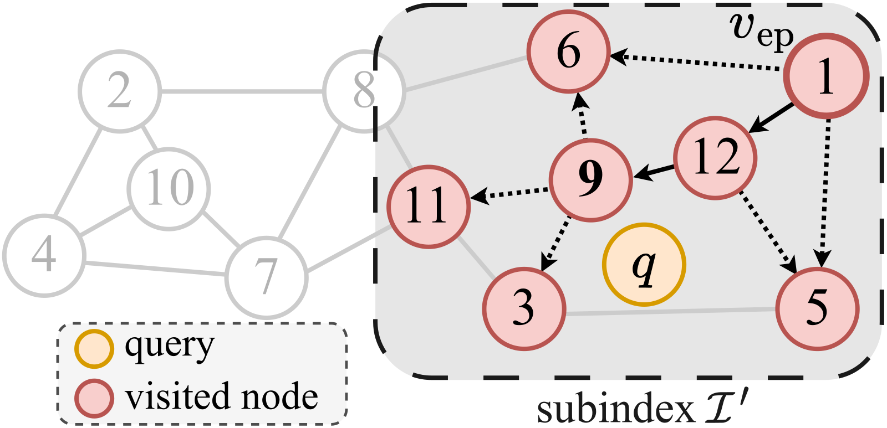
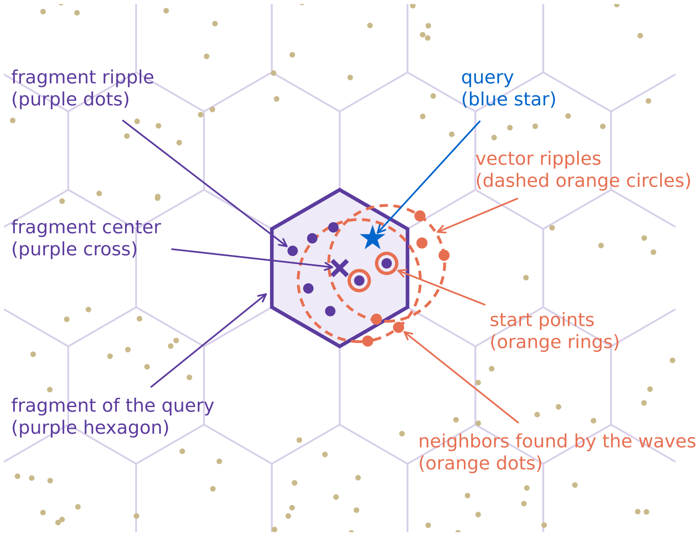

目录 · 8 节
1一条向量检索链路有三个环节2被评对象和评测条件3走一遍：MSCOCO 上一个低召回该怪谁4索引管的是速度和保留率5带过滤的检索：参数调大，召回反而掉6过滤比例和维度决定该不该用索引7这对做向量检索的人意味着什么8局限向量检索召回上不去，该换 embedding、换索引还是调参数？VecDBLens 把账拆开算你的图文检索上线后召回一直上不去。用户输入一句图片描述，系统去上百万张图里找，配对的那张图经常排不进前 10。这时很容易想到先调索引：把 HNSW 的 efSearch 调大，或者把 IVFPQ（倒排加乘积量化压缩的索引）换成 HNSW（分层图索引）。
论文里有一个数能让人先停一下。在 VisualNews 新闻图文数据上，用 SigLIP2 编码，对 1,259,732 张候选图做不走索引的精确搜索，20,000 条图片描述里只有 408 条，最近的那张图恰好是配对的图，占 2.04%。这时根本没有索引在起作用，问题出在别处。
这篇论文来自中国科学院计算技术研究所、中国科学院大学、香港中文大学（深圳）和马来西亚理科大学，要回答的问题是：向量检索没达到想要的召回和吞吐时，到底该怪 embedding、索引还是查询时的搜索方式。现有的向量数据库评测大多固定一份 embedding，只比索引；而且常用精确最近邻当标准答案，跟真实的相关性可能对不上，于是 embedding 的问题会被算到索引头上。评测的配置范围也窄，恰好适合某个配置的系统会占便宜。VecDBLens 每次只把一个环节当作被评对象，其余的数据集、负载、参数和硬件都固定成同一组条件，在完全相同的条件下比较，再用方差分析看几个环节之间怎么互相影响。论文在图文检索和带过滤的向量检索上各做了一组诊断。
同一个 embedding 下精确搜索的召回是诊断用的参照线，图文检索实验里图索引能保住它的约 99%，瓶颈多在 embedding；但带过滤的检索里，把索引参数调得更激进，召回反而可能下降。这些结论来自公开数据集上的离线测量。
一条向量检索链路有三个环节
论文把向量检索拆成三步。第一步是 embedding：把图片、文字这些原始对象编码成向量。第二步是建索引：用 HNSW、IVFPQ、CAGRA（跑在 GPU 上的图索引）这类算法把向量组织起来，建索引时有自己的参数，比如 HNSW 每个点连几条边。第三步是查询处理：在索引上搜，查询时也有参数，比如 HNSW 一次搜多少候选（efSearch）、IVFPQ 探几个桶（nprobe）。
召回低，三步都可能是原因。embedding 可能把相关的图文放得很远；索引可能没保住 embedding 定义的近邻关系；搜索方式可能在加了过滤条件之后变得低效。只看最后一个召回数字，分不出是哪一步。
还有一个参照物：Flat，即不建索引、逐个算距离的精确搜索。对一个固定的 embedding，Flat 给出的是这个向量空间里按距离排得最准的结果。论文拿它当参照线：索引只决定以多快的速度、保住它的多少，改变不了 embedding 把哪些图文放得近。

被评对象和评测条件
VecDBLens 借用了「评测学」（Evaluatology）的说法：每次诊断只回答一个问题，问题里被比较的那个环节叫被评对象，其余所有因素叫评测条件。
同一个因素在不同问题里身份不同。比 embedding 时，embedding 是被评对象，数据集、索引配置、搜索参数、硬件都是条件；比索引时，embedding 就变成了条件之一。比较只在共享的条件下做：比 ACORN（支持过滤条件的图索引）和 RangePQ（按属性范围组织的压缩索引）两种索引，就用同一份向量、同一批查询、同样的搜索设置和同样的硬件。
单个对象比完之后，还要看它们之间的牵连。论文用函数型方差分析（ANOVA），把召回保留率和吞吐的波动拆成三部分：embedding、建索引、查询处理各自的平均影响，以及它们两两或三者一起时额外多出来的影响。后者叫交互项。
走一遍：MSCOCO 上一个低召回该怪谁
下面用论文表 1、表 13 和 Fig. 2 里 MSCOCO（常用图文检索数据集）全量候选池的数字，按诊断顺序走一遍。
第一步，看到问题。用 SigLIP2 编码、HNSW 建索引，Fig. 2 里这一格标注的 Recall@10 约 0.047，即 100 条描述里不到 5 条能在前 10 里找到配对的图。看起来像是索引没建好。
第二步，固定 embedding，换成 Flat。被评对象是索引，条件是 SigLIP2 和这个数据集。Flat 的 Recall@10 是 0.0488。保留率 = 0.047 ÷ 0.0488 ≈ 0.96，这说明索引只丢了约 4%。
第三步，固定 Flat，换 embedding。现在被评对象是 embedding，条件是 Flat 和这个数据集。CLIP 的 Flat 召回是 0.2973，Qwen3-VL 是 0.5998。从 SigLIP2 换成 Qwen3-VL，参照线从 0.0488 涨到 0.5998，是原来的 12 倍多。这说明瓶颈在 embedding。
第四步，算代价。Qwen3-VL 的向量是 4096 维，CLIP 是 512 维。在这个候选池上，CLIP 的 Flat 每秒能查 207.18 次，Qwen3-VL 只有 24.94 次，慢了 8.31 倍。换 embedding 拿到了召回，丢掉了吞吐。
第五步，再把索引请回来。这时被评对象又变回索引，条件换成 Qwen3-VL。图索引对精确搜索的平均保留率很高：CAGRA 是 0.9959，HNSW 是 0.9875。Fig. 2 里 Qwen3-VL 在这个池子上 HNSW 的召回标注为 0.599，跟 Flat 的 0.5998 几乎一样，吞吐则交给索引去拿回来。

这个例子说明，召回低时先拿 Flat 量一下参照线，就能分清是索引在丢结果，还是 embedding 本身就没把相关的图文放到一起。论文把五个条件的 Flat 召回放在一张表里：
| embedding | 维度 | MSCOCO 全量池 | VisualNews | 五个条件平均 |
|---|---|---|---|---|
| Qwen3-VL | 4096 | 0.5998 | 0.2687 | 0.6988 |
| CLIP | 512 | 0.2973 | 0.2496 | 0.5230 |
| SigLIP2 | 768 | 0.0488 | 0.0724 | 0.2225 |
（数字来自论文表 1 和附录 B.2，Flat 精确搜索的 Recall@10。五个条件是 Flickr30K 和 MSCOCO 各自的 5,000 张测试池与全量池，加上 VisualNews。）
这组差别不只是维度带来的。论文把 SigLIP2 和 Qwen3-VL 都降到跟 CLIP 一样的 512 维再比，三个模型两两之间的差别在统计检验里仍然显著。
候选池变大时，好的 embedding 也更稳：从 5,000 张扩到全量，Qwen3-VL 保住了 72.3% 的召回，CLIP 是 49.6%，SigLIP2 是 33.2%。
索引管的是速度和保留率
既然参照线由 embedding 定，索引的工作就是用尽量少的计算保住它。在 VisualNews 上用 CLIP 时，Flat 每秒只能查 13.81 次，所以需要索引来提速。保留率不低于 0.99 的配置里，HNSW 用 28 个 CPU 线程做到每秒 1,898.56 次，CAGRA 在一张 V100 上做到每秒 29,433.58 次，保留率 99.28%。这里比的是各后端连同硬件的整套配置，一边是 CPU，一边是 GPU，所以吞吐的倍数不能全算在索引算法上。
压缩类索引要付出召回。Faiss IVFPQ 的平均保留率是 0.7932，cuVS IVFPQ 是 0.7409，它们用召回换了内存。
在 HNSW 上，三个环节之间的牵连主要体现在召回上，几乎不影响吞吐：交互项能解释召回保留率波动的 19.34%–22.01%，对吞吐只解释 0.67%–1.75%。一个具体的表现是：把 efSearch 调大 8 倍，不同建索引配置之间保留率的标准差缩小 36.0%–78.0%。这说明查询时多搜一些，建索引时的参数选得好不好就没那么要紧了。
带过滤的检索：参数调大，召回反而掉
第二组实验是带过滤的向量检索，比如「只在某个价格区间里找最相似的」。数据是 SIFT1M（经典的百万级图像特征向量基准）和 GIST1M（同类的高维基准）改造的 99 万条向量，维度 128 和 960，加上标量属性做范围过滤，过滤比例从 0.01% 到 50%。
论文做了一次单调性检查：在相同条件下把一个建索引参数调大一档，记录召回有没有下降。ACORN 把每个点的连边数 M 调大，2,244 次比较里有 273 次召回下降，占 12.2%，最大一次降了 0.4332，这说明调大参数并不总是安全的；把建图时的搜索宽度 efConstruction 调大，下降的占 18.2%，最大降 0.5237。DiGRA 调大 M，下降的占 25.6%，但幅度很小。
ACORN 的一组对照最直观：
| 指标 | 原来的图 | 连边更多的图 |
|---|---|---|
| 每个点平均满足过滤条件的邻居数 | 0.1596 | 0.2002 |
| 能做两跳扩展的点占比 | 59.97% | 18.78% |
| Recall@100 | 0.3150 | 0.1827 |
（数字来自论文表 4。）
连边多了，每个点平均能用的邻居确实多了一点；可是 ACORN 在连边更多时，触发「去看邻居的邻居」的门槛也更高，能做两跳扩展的点从六成降到不到两成，召回从 0.3150 掉到 0.1827。论文还给了第二个原因：建图时搜索宽度更大，图里会出现更长、方向更单一的边，查询时访问的点更多，找到的真近邻反而更少。在 CC-News 和 App Reviews 两个真实负载上，efConstruction 从 100 调到 400，78 次比较里分别有 39 次和 35 次召回下降。
过滤比例和维度决定该不该用索引
带过滤时，先过滤再精确搜索（Flat 预过滤）并不总是慢。在 128 维的 SIFT 上，过滤比例只有 0.01% 时，Flat 每秒能查 8,949.74 次，是最快的，因为满足条件、要算距离的向量很少。比例到 10% 时，Flat 只剩每秒 48.07 次，DiGRA 单线程能到 1,592.11 次。

换到 960 维的 GIST，每次算距离更贵，在 Recall@100 达到 0.95 的已测配置里，DiGRA 在所有过滤比例下都是单线程最快的，包括 0.01%：每秒 3,843.01 次，Flat 是 1,158.62 次。所以在所测的 960 维条件下，过滤得再严，Flat 也不是最快的。
速度之外还有建索引的成本。在 128 维上，DiGRA 建一次索引的中位时间是 6,162 秒，ACORN 单线程版本只要 3.71 秒。RangePQ 建得快、内存涨得最少，但在 960 维的 GIST 上，它测过的所有配置都没达到 0.95 的 Recall@100。
这对做向量检索的人意味着什么
召回不达标时，先用 Flat 在同一份向量上量出参照线，再决定先动 embedding 还是索引。
如果 Flat 本身就低，先查 embedding，同时用保留率看索引和搜索参数还剩多少空间；换了更大的 embedding 之后，再用图索引把吞吐拿回来。如果 Flat 高、索引低，才是索引和查询参数的问题，这时可以先加大查询时的搜索预算，它能降低对建索引参数的敏感。
调带过滤检索的建索引参数时，别默认「越大越好」。在自己的过滤比例和维度上，把相邻两档参数在相同条件下各跑一遍，看召回有没有反而下降。是否用 Flat 预过滤，也要看过滤比例和维度一起定。
局限
VecDBLens 看的是召回、吞吐、内存、建索引时间和参数稳定性，能指出瓶颈在哪个环节，说不清 embedding 具体在哪类语义上出错。论文也把更细的语义诊断列为后续工作。
图文检索用的是 Flickr30K、MSCOCO 和 VisualNews，带过滤检索的主实验用的是 SIFT 和 GIST 加上人工构造的标量属性，真实负载只补测了 ACORN 一种方法。吞吐数字依赖论文的硬件：两颗 Xeon Gold 6330 和 V100 显卡，换一套硬件，具体倍数会变。
读完这篇，你觉得
夜读鸮记下了，谢谢你的反馈。
点一下即可，无需登录；再点一次撤回。只统计匿名次数，不记录你是谁。
相关论文RELATED
 Infra · 2026-11-19SIMQ: A Single Graph-based Index for Multi-Vector Query多向量检索把文档表示成一组 token 级向量，再用最大相似度打分，效果好，但算力贵，很难扩到大语料。现有近似方法要么每次查询都要算完整的中心交互矩阵并依赖 GPU 聚类，要么用与数据无关的压缩，召回不稳定，还得反复补偿。一种单图索引把所有 token 向量做数据感知采样聚类，只在簇中心上建一张图，再按 token 做图导航来近似最大相似度，既不用物化交互矩阵，也不依赖 GPU 加速。五个基准上，在接近的召回水平上，数据感知聚类的查询吞吐相当或更高，例如在 SciDocs 上每秒处理 121.6 次查询，高于 k-means 的 105.0 次。该方法已接入蚂蚁集团开源的向量检索库 VSAG，让多向量检索可以主要在 CPU 上扩出去。
Infra · 2026-11-19SIMQ: A Single Graph-based Index for Multi-Vector Query多向量检索把文档表示成一组 token 级向量，再用最大相似度打分，效果好，但算力贵，很难扩到大语料。现有近似方法要么每次查询都要算完整的中心交互矩阵并依赖 GPU 聚类，要么用与数据无关的压缩，召回不稳定，还得反复补偿。一种单图索引把所有 token 向量做数据感知采样聚类，只在簇中心上建一张图，再按 token 做图导航来近似最大相似度，既不用物化交互矩阵，也不依赖 GPU 加速。五个基准上，在接近的召回水平上，数据感知聚类的查询吞吐相当或更高，例如在 SciDocs 上每秒处理 121.6 次查询，高于 k-means 的 105.0 次。该方法已接入蚂蚁集团开源的向量检索库 VSAG，让多向量检索可以主要在 CPU 上扩出去。
Infra · 2026-11-16Authenticated Approximate Nearest Neighbor Search in Outsourced Vector Databases向量库托管到第三方云上后，云服务可能为了省算力少搜几个邻居，甚至篡改结果，客户端得能验证返回的近邻搜索是不是真的。现有做法让云把图索引上的遍历路径和沿途访问过的全部原始向量一起发回，客户端自己重算距离。embedding 动辄上千维，这份证明就大得离谱。VIDA 改发向量承诺，它的大小和维度无关，再用一个聚合的内积证明一次验证多次距离计算。配套的认证结构让证明路径贴着图遍历走，量化给出的距离上下界又能先剪掉一批点，这些点不必做密码学验证。和现有最好的方法比，端到端延迟最多快 6.6 倍，数据传输时间最多减少 99.2%。验证开销大头在传原始高维向量，换成承诺就省掉了绝大部分。
Infra · 2026-11-04OctEx: Billion-Scale Vector Search by Precomputed Lattice Neighbor Lists on GPUsGPU 上做高召回的向量检索，图检索慢在一轮等一轮的串行链上，而不是算距离本身。OctEx 把 GPU 显存花在建库时预先算好的近邻列表上。它把数据随机投影成几百份低维副本，每份把空间切成格子，并给每个格子存一张离格子中心最近的向量列表。查询先算出自己在每份副本里落进哪个格子，一步并行读出这些列表拿到候选，再读最好那几个候选各自预存的邻居表，只走固定的几轮。和 GPU 上的标准图检索基线 CAGRA 比，在高召回下，它在一亿条以内的七个数据集上快 2.0 到 46.4 倍。到了十亿条的数据集上，优势缩小到 1.46 到 2.05 倍。用显存换掉查询时的串行等待，是这篇的核心取舍。
讨论
欢迎补充实验细节、复现经验或不同看法。需 GitHub 登录。
正在加载讨论…